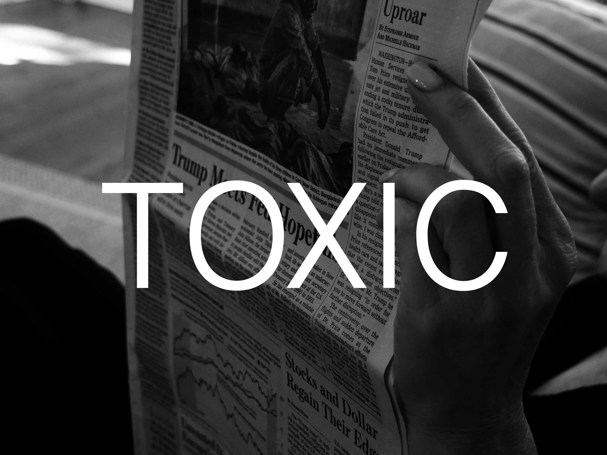
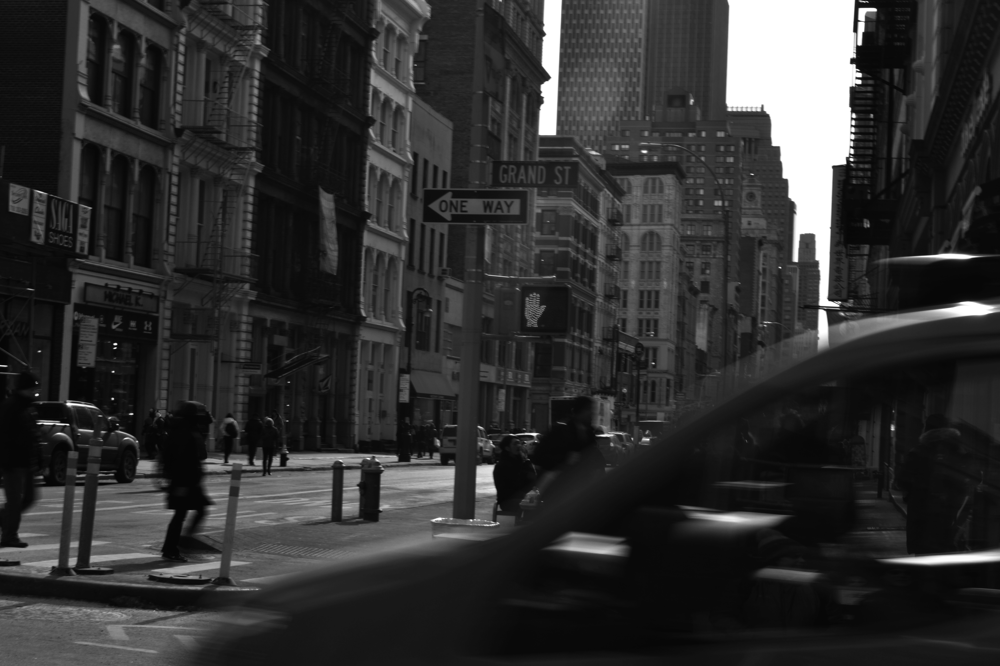
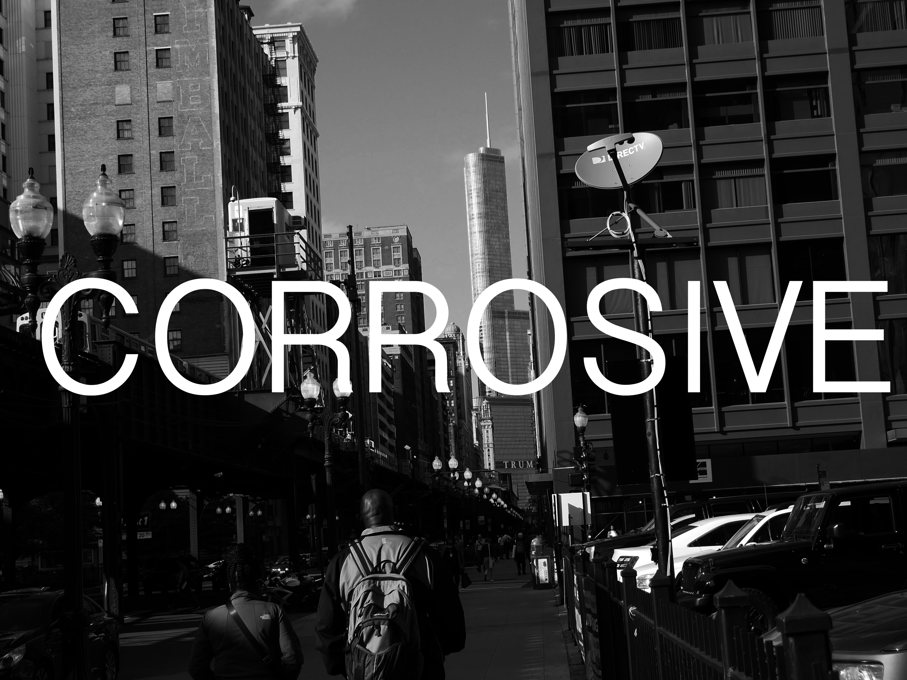
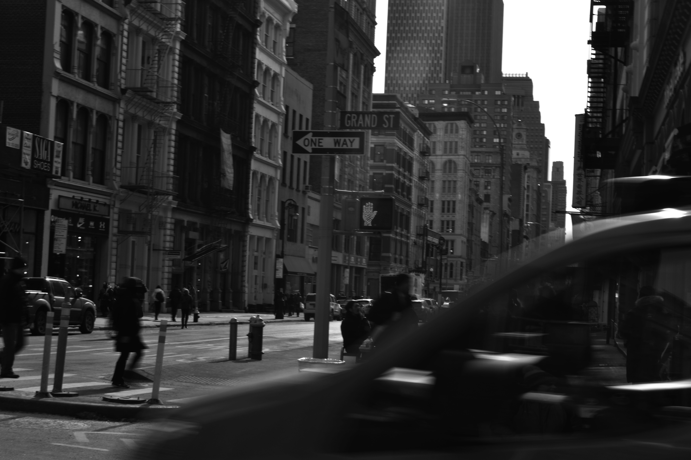
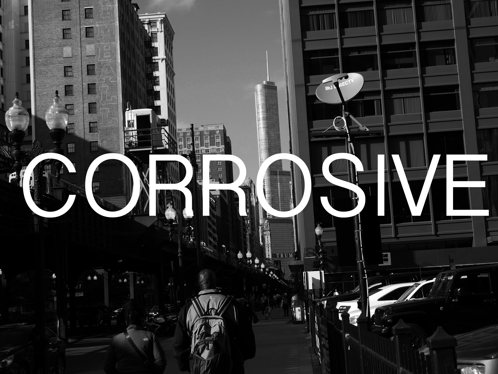

MADELEINE LEONHARDT
about me:
my name is madi and i am a photographer from Chicago, IL
artist statement:
I use photography to convey powerful emotions, share a backstory, and document my traveling experiences. I chose photography as my medium because it is like looking at the world in a whole new perspective and it helps me see beauty in things people wouldn't even consider. Photography for me is an escape from the real world, which can get too chaotic and stressful at times. Photography is also an adventure, it leads me to so many amazing and unfamiliar places and sometimes even takes me out of my comfort zone.
follow me on ig

 


